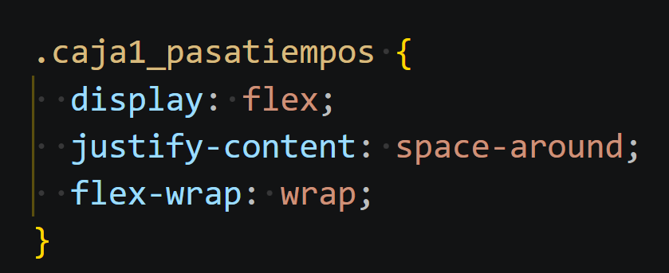
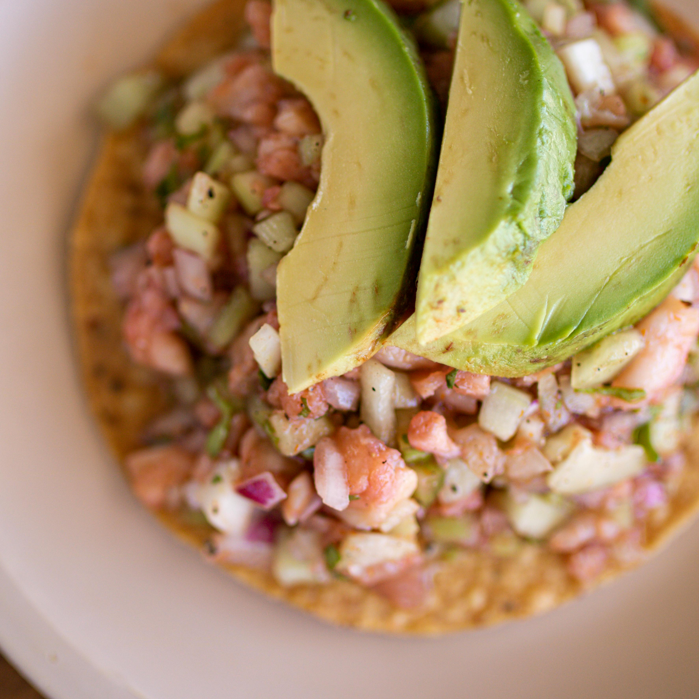
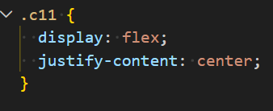

Cocinar
Me gusta cocinar en mi tiempo libre, ya que disfruto experimentar con nuevas recetas y aprender diferentes formas de preparar alimentos. También me gusta mucho hacer postres, especialmente cuando intento recrear recetas que veo en internet.

Me gusta cocinar en mi tiempo libre, ya que disfruto experimentar con nuevas recetas y aprender diferentes formas de preparar alimentos. También me gusta mucho hacer postres, especialmente cuando intento recrear recetas que veo en internet.
Disfruto mucho pasar tiempo de calidad con mi familia, ya que es un espacio donde puedo convivir, platicar y fortalecer la relación con ellos. Me gusta compartir momentos tranquilos y agradables que nos permitan estar más unidos.

Me gusta salir a pasear con mi perrita porque es una actividad que me ayuda a despejarme y relajarme. Además, disfruto mucho su compañía y el tiempo que pasamos juntas al aire libre.
Me encanta escuchar música durante el día, ya que me acompaña en muchas de mis actividades como hacer tareas, cocinar o relajarme. La música me ayuda a mejorar mi ánimo y a disfrutar más cada momento.

Esta imagen ilustra el código css de nuestra propiedad y valor utilizada

Pan integral tostado con aguacate machacado, huevo cocido en rodajas o estrellado, sal, pimienta y un toque de limón.

Platillo mexicano fresco y crujiente, consistente en una tostada, cubierta con pescado o camarón "cocinado" en jugo de limón, mezclado con jitomate, cebolla, cilantro, chile, especias y algunas salsas de nuestro gusto.

Postre clásico y elegante que combina una base crujiente de galleta con una crema suave y densa de queso, acompañada por una salsa o cobertura de frambuesas

Esta imagen ilustra el código css de nuestra propiedad y valor utilizada
